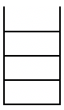

Stacks
Please again read carefully what is stated in this disclaimer before continuing on with your reading.

A stack is a linearly-type data structure (called linearly because its implementation is either an array or a linked list, which are linear structures). It is also known as the LIFO structure, which stands for Last-In-First-Out structure. This means that the only element that we can remove from the stack is the top element (if we visualize the stack vertically), and this element would actually be the last element that was added to the list. So this means that elements at the bottom of the stack, or the elements that were added in first cannot be removed that easily. Picture a stack of plates, books or pancakes. It would be more easy to "take the one on top" than to get something at the middle or at the bottom. And that's why your professor wants you to "get the one on top" when passing the test exams to your neighbor!
Stack ADT vs Stack Interface
The Stack ADT (accessible from Java's utility library
java.util.Stack) is able to store auxiliary objects. As mentioned earlier, it follows a scheme called last-in-first-out, where only the most recently added element to the list may be removed. This abstract data structure has two main operations, push(e) and pop(), where the former method inserts item e into the stack while the latter removes from the stack the item that was the most recently added into the stack. Both of these methods return the item that was inserted or removed.
The other methods of the ADT are
empty() (returns a boolean value that tests whether the stack is empty), peek() (similar to pop() but does not remove the element from the stack), and search(e) (returns an integer value giving the position of the item e from the stack or -1 if it is not found in the stack). For more information with regards to the methods of a stack, click here for the API.
The Stack Interface on the other hand is similar to the Stack ADT but with a couple of differences. Below shows the interface implmented for a Stack.
public interface Stack<E> {
int size(); //returns the number of items in the stack
boolean isEmpty(); //returns true if there is nothing in the stack and false otherwise
E top(); //returns the item on top of the stack
void push(E element); //inserts the item onto the stack
E pop(); //removes the item from the stack and returns it
}
In choosing whether to use the interface or the ADT, note that you would have to consider the differences between the two and that each one have its own pro and con. So for instance, if one wishes to use a stack interface, then one would have to carry along that interface from the above code along with some linear implementation (could be an array or a linked list) in order to be able to use a stack. On the other hand, the stack ADT is already good too - since it is already an existing library within Java. All you have to do is to import the necessary utility library for it.
And in terms of the methods, we all can see the differences already from the above. Both of them have a push and pop methods that allow for the insertion and removal of items in our stack. But note that while in pop, we return the item being removed apart from the fact that we remove the item from the stack. In the push method, we only return the item being added into the stack in the stack ADT implementation. For the interface version, we need not return anything.
Also notice that while in the stack interface implementation, there is an additional size method that returns the number of items in the stack, the ADT does not have its own and may need to have some method that keeps track count of the number of items in the stack through some global variable. It does inherit a size method from
java.util.Vector but this is not the size that we want and will return a different behavior if we try calling it.
Both implementations also have a primary method that checks whether the stack is empty. The stack ADT has empty while the stack interface has isEmpty. In terms of accessing the most recently added element in the list, we have top for the stack interface and peek for the stack ADT.
One method that is not present with the stack interface but may be handy for the stack ADT is its search method. It checks whether the item passed on to it is present in the stack and returns an integer value of its position in the stack. If it is not in the stack, it should return -1. This is handy since we can easily access some item that we want within the stack, wherever they may be, top or bottom. In the stack interface, we might need to pop first all items in the stack if we want to access the first item that we added into the stack (queues may be more appropriate for that kind of scenario) - but then another problem arises if that's the case. Suppose upon accessing that bottom element in the stack, we still want to access the other elements. If we kept on popping the elements from the stack just to access the bottom, then all those elements have already been forgotten and lost in memory. But unless it was stored somewhere else, then we can still access them. But the issue with this one is with regards to memory - using more memory than needed. Even if we say using another stack or an array or some list, additional memory is the problem. Hence not so good. So for this scenario, a +1 is given to ADT.
There are still some differences between ADT and the interface apart from methods. In terms of exceptions, it shall be talked about in the later section - on implementation. For now, here is a summary table of the differences:
| Stack ADT | Stack Interface | ||
| Method | Return | Method | Return |
| push(E e) | E | push(E e) | void |
| pop() | E | pop() | E |
| peek() | E | top() | E |
| empty() | boolean | isEmpty() | boolean |
| search(E e) | int | - | - |
| - | - | size | int |
Implementation
Stacks can be implemented with a linear structure such as a linked list or an array. I'll leave it to you as an exercise to implement a stack as a linked list. Its implementation has a similar flavor to that of the implementation of an array-based stack:
public class ArrayStack<E> implements Stack<E> {
public static final int CAPACITY = 1000; // default array capacity
private E[ ] data; // generic array used for storage
private int t = −1; // index of the top element in stack
// constructs stack with default capacity
public ArrayStack( ) {
this(CAPACITY);
}
// constructs stack with given capacity
public ArrayStack(int capacity) {
data = (E[ ]) new Object[capacity]; // safe cast; compiler may give warning
}
public int size( ) {
return (t + 1);
}
public boolean isEmpty( ) {
return (t == −1);
}
public void push(E e) throws IllegalStateException {
if (size( ) == data.length)
throw new IllegalStateException("Stack is full");
data[++t] = e; // increment t before storing new item
}
public E top( ) {
if (isEmpty( )) return null;
return data[t];
}
public E pop( ) {
if (isEmpty( )) return null;
E answer = data[t];
data[t] = null; // dereference to help garbage collection
t−−;
return answer;
}
}
For more information on the array-based stack code above, click here, the original source of the code above.
The space used here is \(O(n)\) while for all these operations, they run in \(O(1)\). Also note that in trying to access the top element of the stack or trying to pop the stack if it is empty gives a null for the interface version of a stack but gives an EmptyStackException for the util version. Also note that in the util version that we can add as many elements as we want in our stack as the stack there is extendable (well of course it also depends on your system's memory). The stack used above is array-based, meaning that it can get full as soon as it has reached its limit. Trying to extend it is very costly in terms of runtime and memory space, which is one important drawback to note in using the above implementation.
Examples and Applications
Let us start with our first example. Suppose we have some Stack \(S\) and then we run the following stack operations sequentially on \(S\):
- isEmpty()
- push(5)
- size()
- push(3)
- top()
- pop()
- pop()
- pop()
| Method | isEmpty() | push(5) | size() | push(3) | top() | pop() | pop() | pop() |
| Return | true | - | 1 | - | 3 | 3 | 5 | null |
| Stack |

|
|
|
|
|
|
|
|
You may not realize it, but stacks are really important. In the context of computing, method calls within a program use a stack. Suppose you are running some Java program below:
class Sample {
void main(String[] args) {
A();
System.out.println("done");
}
void A() { B(); }
void B() { C(); }
void C() { System.out.println("Method call over."); }
}
 Notice the method stack. Java will push into the method stack whatever method was called. So imagine that we are executing this program above (or whichever program), and will begin its execution on the
Notice the method stack. Java will push into the method stack whatever method was called. So imagine that we are executing this program above (or whichever program), and will begin its execution on the main() method. We push this method into our method stack. In our program, it makes a call on A() (this can be some generic method in some generic Java program). By Line 3, it should have pushed A() into our method stack too. When it executes A(), it then calls on method B(). Again, method calls indicate pushing the method into the method stack. So we push B() too. Similarly, we do the same for method C(). What we should be getting is the method stack shown in the image. But then notice that there are no more method calls in C(). This means that after the execution of C(), upon its return, it should be popped from the method stack. The return value of the pop from the method stack is the same return value from the return of the execution of C(). In this case, it is void. Upon completion of method C() and popping it from the method stack, we will do the same for methods B() and A() respectively. After the execution of Line 3, only main() should be left on the stack. We print the final statement at Line 4 and then return, popping main() from the method stack. Obviously, we can see this use of method stack and stack overflows in recursion.
Another problem we can consider with regards to the application of stacks is the parenthesis matching algorithm. Given a string of only parentheses, braces and/or brackets, implement an algorithm that would return true if the string passed is valid and false otherwise. By valid, we mean that the string contains the same number of opening and closing symbols. Also, the corresponding closing symbol for some opening opening symbol should always come after. So for example the strings ( )(( )){([( )])} and (( )(( ))){([( )])} are both valid while )(( )){([( )])} and ({[ ])} are not. Here is an algorithm for it.
Algorithm matchParentheses(str)
[Input]: A string containing parentheses, brackets and/or braces
[Output]: true if the symbols matched, false otherwise
begin
S ← an empty stack //initialize a stack
openingSymbols ← {"(", "{", "["} //define our symbols
closingSymbols ← {")", "}", "]"}
for i ← 0 to str.length-1; do
if str.charAt(i) ∈ openingSymbols, then
S.push(str.charAt(i))
else if str.charAt(i) ∈ closingSymbols, then
if S.isEmpty(), then
return false //has nothing to match with
if openingSymbols.indexOf(S.pop()) != closingSymbols.indexOf(str.charAt(i)), then
return false //wrong matching symbol
if S.isEmpty(), then
return true //every symbol matched
else
return false //some symbols were never matched
endAlgorithm
And of course, not just in computing but we can also see stacks all around us in our daily lives. Stacks of clothes, stacks of pancakes, stacks of books, stacks of plates, etc.
Exercises
Try some of these exercises regarding stacks.
- Linked List Reverser. You are given a linked list \(L\), assume it is singly-linked. Describe a way of reversing \(L\) that uses a stack.
- Postfix Notation. The postfix notation is an unambiguous way of writing an arithmetic expression without parentheses. It is defined so that if
(exp1) op (exp2)is a normal fully parenthesized expression whose operation isop, the postfix version of this ispexp1 pexp2 op, wherepexp1is the postfix version ofexp1andpexp2is the postfix version ofexp2. The postfix version of a single number or variable is just that number or variable.
So, for example, the postfix version of((5+2) ∗ (8−3))/4is5 2 + 8 3 − ∗ 4 /. Describe a nonrecursive way of evaluating an expression in postfix notation. - Equal Stacks. Credits to Hacker Rank for this problem, you may write a Java program or a pseudocode for this (or code this even to test your work).
You have three stacks of cylinders where each cylinder has the same diameter, but they may vary in height. You can change the height of a stack by removing and discarding its topmost cylinder any number of times.
Find the maximum possible height of the stacks such that all of the stacks are exactly the same height. This means you must remove zero or more cylinders from the top of zero or more of the three stacks until they're all the same height, then print the height. The removals must be performed in such a way as to maximize the height.
Input Format: The first line contains three space-separated integers \(n_1,n_2,n_3\), describing the respective number of cylinders in stacks, 1, 2, and 3. The subsequent lines describe the respective heights of each cylinder in a stack from top to bottom:- The second line contains $n_1$ space-separated integers describing the cylinder heights in stack 1.
- The third line contains $n_2$ space-separated integers describing the cylinder heights in stack 2.
- The fourth line contains $n_3$ space-separated integers describing the cylinder heights in stack 3.
Constraints:- \(0 \leq n_1,n_2,n_3 \leq 10^5\)
- \(0 < h \leq 100\), where \(h\) is the height of any cylinder
Output Format: Print a single integer denoting the maximum height at which all stacks will be of equal height.
Sample Input:
5 3 4
3 2 1 1 1
4 3 2
1 1 4 1
Sample Output:
5
Explanation: Initially, the stacks look like this:
Observe that the three stacks are not all the same height. To make all stacks of equal height, we remove the first cylinder from stacks 1,2 and 3 then remove the top two cylinders from stack (shown below).
As a result, the stacks undergo the following change in height:
Stack 1: 8 - 3 = 5
Stack 2: 9 - 4 = 5
Stack 3: 7 - 1 - 1 = 5
Thus we print out 5 as the answer.
Leave a Message
Use this message box for any questions, comments, concerns, typos, mistakes, or anything that you want to tell me. I am all ears :D